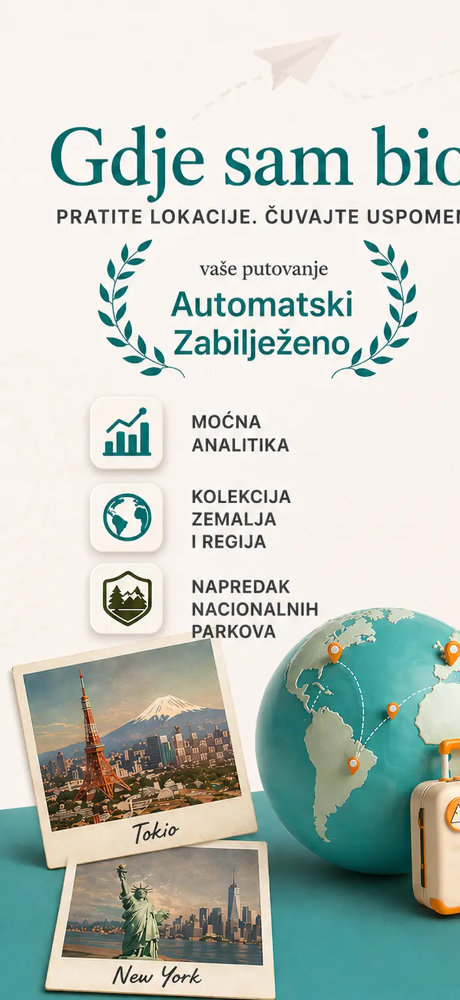
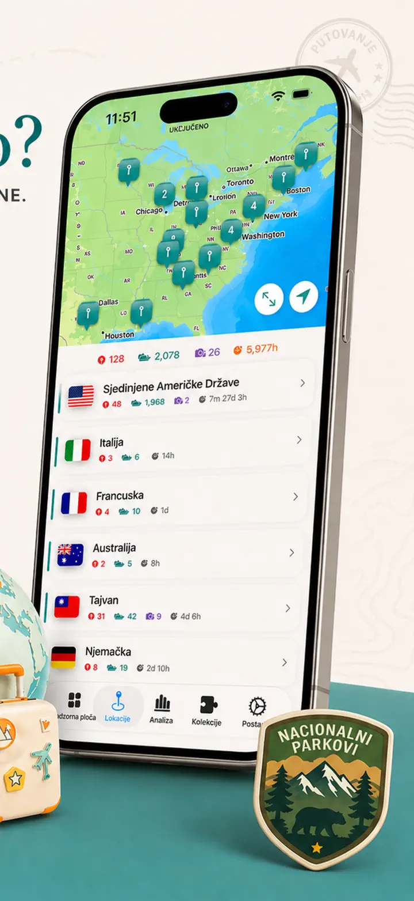
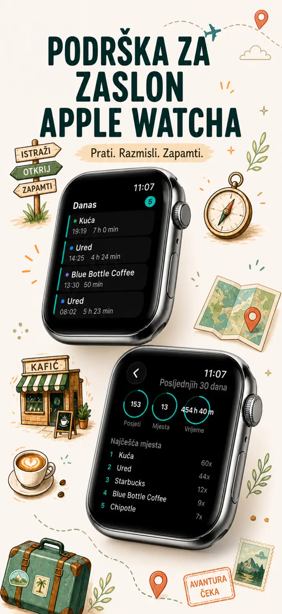
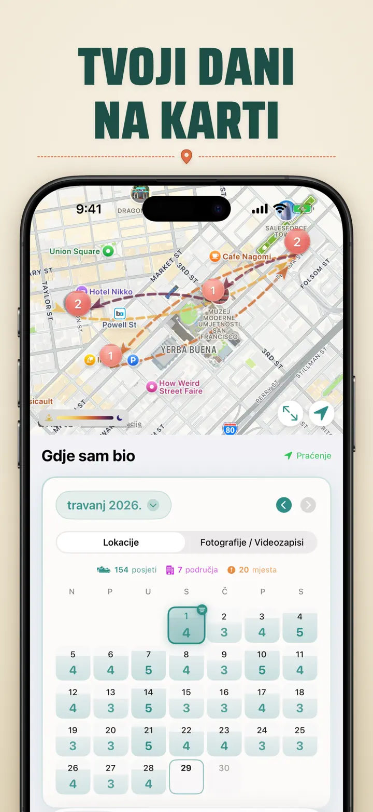
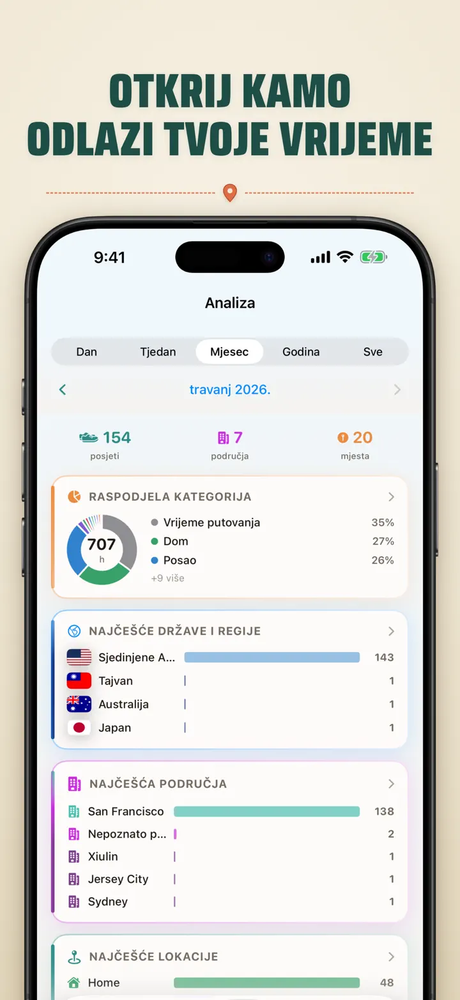
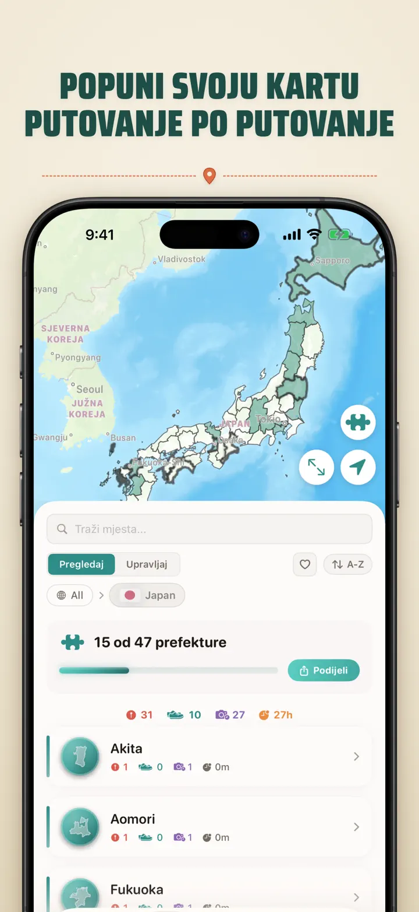
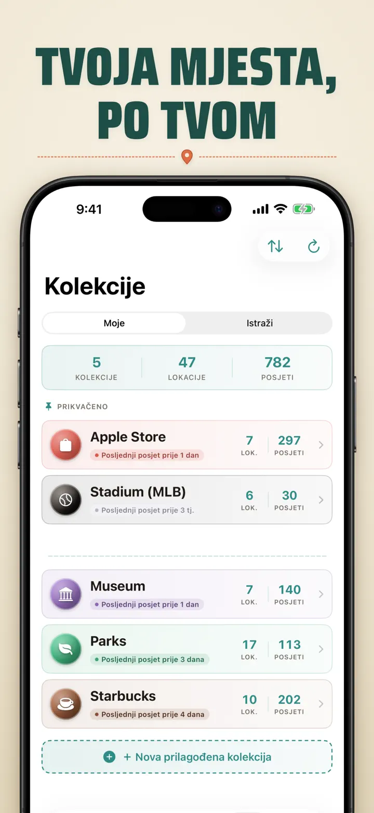
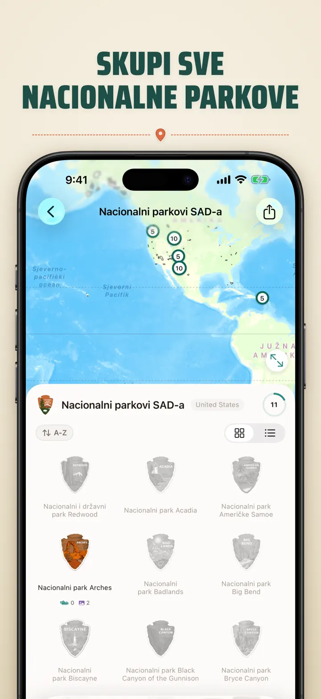
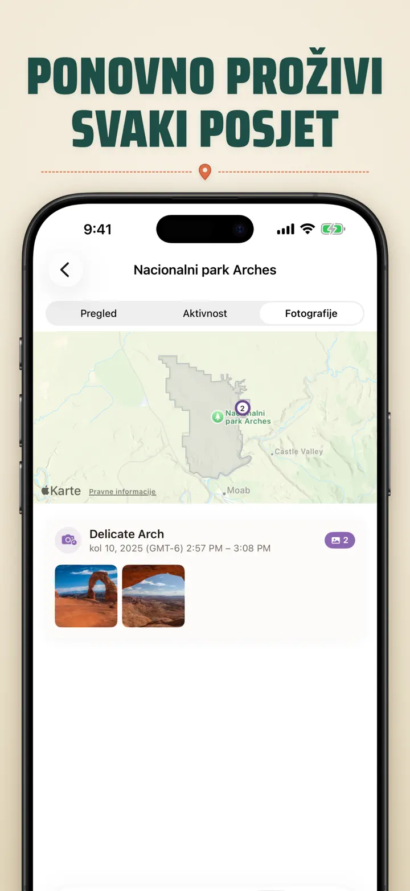

Gdje sam bio
auto putovanja / foto lokacije
Novo: 103 Ichinomiya svetišta Japana, svako s vlastitom izrezbarenom značkom. Automatsko bilježenje posjeta i privatna vremenska crta, sve na vašem uređaju.
Preuzmi na App Storeu
O aplikaciji
Where was I ? — Vaša osobna memorija lokacija
Pokušavate zapamtiti restoran od prošlog mjeseca? Ili koliko vremena provodite u uredu, a koliko kod kuće? Where was I ? automatski bilježi posjete i gradi vremensku crtu vašeg putovanja.
AUTOMATSKO PRAĆENJE
Nije potrebno ručno bilježenje. Aplikacija tiho bilježi dolaske i odlaske, stvarajući detaljnu povijest posjeta bez ikakvog truda.
PAMETNI KALENDARSKI PRIKAZ
Pogledajte posjete po danu, tjednu ili mjesecu. Intuitivni kalendar prikazuje broj posjeta i mjesta na prvi pogled. Dodirnite dan da vidite gdje ste bili.
WIDGETI POČETNOG I ZAKLJUČANOG ZASLONA
Najnovije posjete vidite na prvi pogled pomoću srednjeg widgeta početnog zaslona. Widgeti zaključanog zaslona prikazuju trenutnu lokaciju, mjerač zadržavanja ili današnji broj posjeta — sve se otvara dodirom.
ORGANIZIRANE LOKACIJE
Lokacije se automatski grupiraju po regiji i gradu. Dodijelite kategorije poput Dom, Posao, Teretana ili Kafić. Stvorite vlastite kategorije s ikonama i bojama.
MOĆNA ANALITIKA
Otkrijte obrasce u svom životu:
- Raspodjela vremena po kategorijama
- Najposjećenija mjesta
- Analiza tjednog ritma
- Trendovi učestalosti posjeta
- Graf trajanja posjeta za svaku lokaciju — po danu, tjednu, mjesecu ili godini
KOLEKCIJA DRŽAVA I REGIJA
Pretvorite putovanja u slagalicu! Pogledajte koliko ste regija posjetili u svakoj zemlji. Podijelite napredak kao sliku slagalice.
NAPREDAK U NACIONALNIM PARKOVIMA
Istražite prirodu! Automatski bilježite posjete parkovima i pratite napredak uz svakodnevne lokacije.
100 ZNAMENITIH JAPANSKIH DVORACA
Putujete Japanom? Nova ugrađena zbirka prati vaše posjete 100 znamenitih dvoraca zemlje. Otvorite Kolekcije → Istraži → Japan.
PRILAGOĐENE KOLEKCIJE
Pratite što god želite — Apple Stores, muzeje, pivovare. Stvorite kolekciju, postavite ključne riječi i gledajte kako se popunjava. Dodajte ili uklonite lokacije ručno. Svaka prikazuje broj, povijest i kartu.
UVEZITE SVOJU POVIJEST LOKACIJA
Dolazite iz druge aplikacije? Ponesite cijelu svoju povijest — format se prepoznaje automatski, veliki izvozi se obrađuju, a prije uvoza vidjet ćete pretpregled:
- Google Timeline (izvoz iz Google Maps ili Google Takeout)
- Arc Timeline (mjesečne .json datoteke koje izvozite iz Arc)
- Moves (sigurnosna kopija ProtoGeo / Facebook Moves)
GRUPNO UPRAVLJANJE
Upravljajte svim lokacijama na jednom mjestu. Pretražujte, sortirajte i filtrirajte. Odaberite više lokacija za grupnu kategorizaciju ili brisanje.
PRIVATNOST NA PRVOM MJESTU
Vaši podaci o lokaciji ostaju na uređaju. Nisu potrebni računi. Podaci se ne šalju na poslužitelje. Vaša su kretanja vaša stvar.
SAVRŠENO ZA:
- Praćenje radnih sati i lokacija
- Pamćenje restorana i trgovina
- Analizu svakodnevne rutine
- Dnevnik putovanja i posjeta parkovima
- Izvješća o troškovima i kilometraži
ZNAČAJKE:
- Automatsko otkrivanje dolaska i odlaska
- Kalendarski prikaz s dnevnom vremenskom crtom posjeta
- Widgeti početnog i zaključanog zaslona s poveznicama u aplikaciju
- Grupiranje lokacija po regiji i gradu
- Prilagođene kategorije s ikonama i bojama
- Pametni prijedlozi kategorija iz Apple Mapsa
- Detaljna povijest posjeta s trajanjem
- Graf trajanja posjeta za lokacije (dan / tjedan / mjesec / godina)
- Analitička nadzorna ploča s uvidima
- Pretraživanje i filtriranje lokacija
- Kolekcija država i regija s djeljivom slikom slagalice
- Praćenje napretka u nacionalnim parkovima
- Ugrađena zbirka 100 znamenitih japanskih dvoraca
- Prilagođene kolekcije s automatskim podudaranjem ključnih riječi, ručnim uređivanjem i statistikom
- Grupno upravljanje lokacijama
- Uvoz iz Google Timeline, Arc Timeline i Moves
- Mogućnosti izvoza
- Nije potreban račun
- Dizajn usmjeren na privatnost
Počnite graditi memoriju lokacija već danas. Preuzmite Where was I ? i nikad ne zaboravite gdje ste bili.
Privacy Policy: https://masawata.net/privacy-policy.html Terms Of Service: https://www.apple.com/legal/internet-services/itunes/dev/stdeula/
Snimke zaslona








Gdje sam bio
Novo: 103 Ichinomiya svetišta Japana, svako s vlastitom izrezbarenom značkom. Automatsko bilježenje posjeta i privatna vremenska crta, sve na vašem uređaju.
Preuzmi na App Storeu